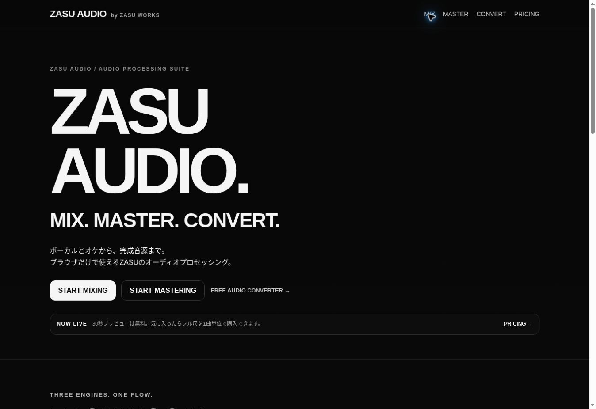
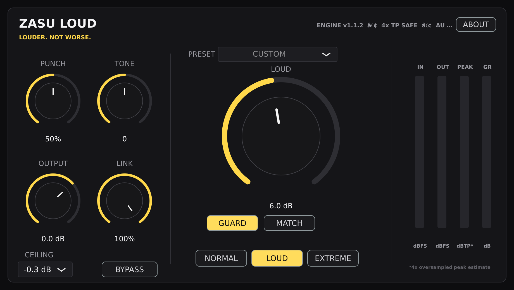

ZASU DAW
録音から、完成音源まで。 v1.4 正式版

ZASU AUDIO
MIX. MASTER. CONVERT.

ZASU LOUD
Loudness, without the complexity.

作る人が、作ることに集中できる道具を。
録音から、完成音源まで。 v1.4 正式版
MIX. MASTER. CONVERT.

Loudness, without the complexity.
